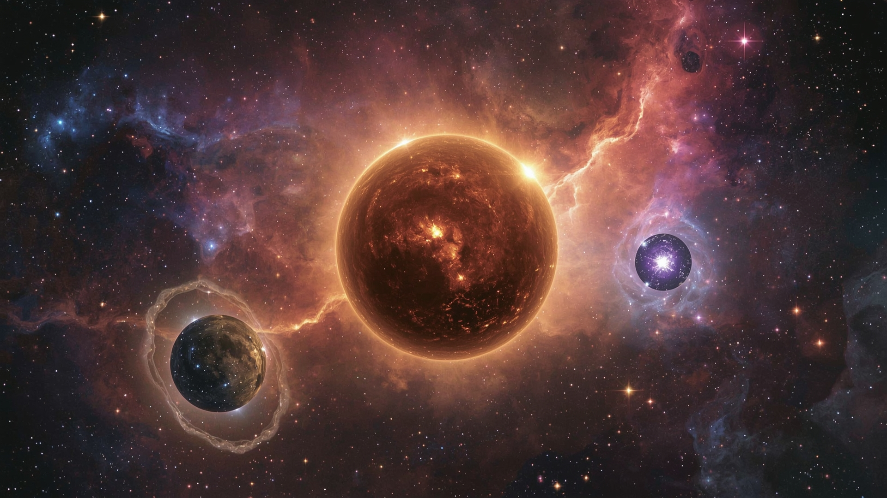
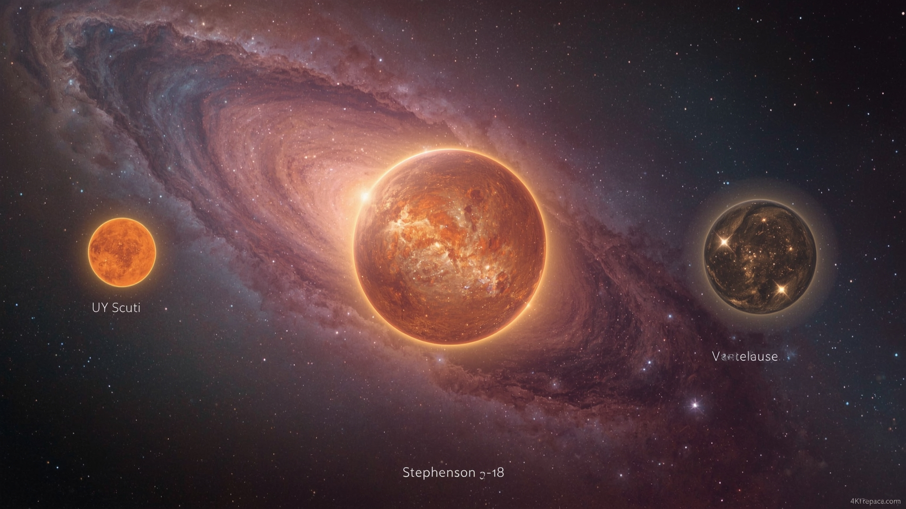
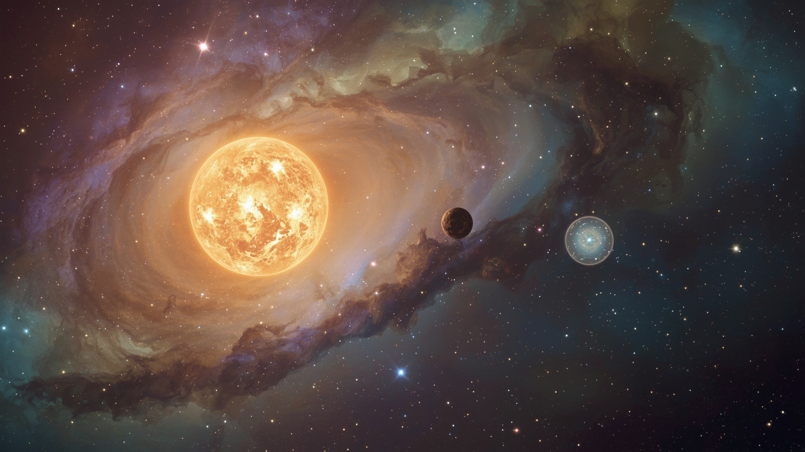

As estrelas são os motores do universo, criando elementos e gerando luz e calor. Entre bilhões delas, algumas se destacam por seu tamanho colossal, desafiando nossa compreensão de quão grandes os objetos cósmicos podem ser.

UY Scuti

Stephenson 2-18

Betelgeuse